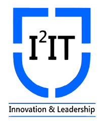

International Institute of Information Technology
-
home
-
about
-
Rating
-
Upcoming

I2IT
The International Institute of Information Technology (I²IT), Pune [pronounced as I Square IT] was established by Late Shri. P. P. Chhabria, Founder Chairman of Finolex Group of Companies, a well-known philanthropist and former President of Mahratta Chamber of Commerce, Industries and Agriculture (MCCIA). As a world class academy to impart high-end education in Engineering and Technology the Institute has strived to meet the growing needs of the industry. Established on 10 acres of land, this institute equips students to accept challenges in the areas of Information Technology, Engineering and other niche areas of expertise.
Home
About
Rating
Upcoming